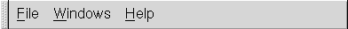
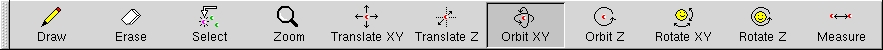

1. Introduction
Ghemical is a computational chemistry software package released under
the GNU GPL. It means that full source code of the package is available,
and users are free to study and modify the package. If you wonder about spelling
in the package name, yes it's intentionally a bit "wrong" (originally inspired
by the funny name of the excellent spreadsheet program Gnumeric), but feel
free to pronounce it just in a way that is comfortable!
This document describes the user interface of the Ghemical for GNOME desktop
environment, as well as the main features of different components of the
program. Ghemical for GNOME is a standard GNOME MDI application, so the generic
features of GNOME MDI applications and user interfaces apply to this program
as well.
The main elements of the user interface are the main menu and the main
toolbar.

The items in the main menu cover the features:
- File : Create new projects, Open projects from files, Exit the program.
- Windows : Change the GNOME MDI mode settings from the system defaults,
and view a list of currently open project files.
- Help : Display the About Box and this User's Manual.

The buttons of the the main toolbar are mouse tool buttons. One of these
buttons is always pressed down, and this determines what operations are
done when the user handles the models with mouse. The left mousebutton
always triggers the mouse tool operations, and the tools and operations
are the following:
- Draw : Add atoms or bonds to the model, or change the types of existing
atoms or bonds in the model.
- Erase : Remove atoms or bonds from the model.
- Select : Mark atoms selected in the model. Selecting an already selected
atom will de-select it.
- Zoom : Change the zooming of this 3D-view.
- Translate tools: Translate the "camera" which produces this 3D-view.
- Orbit tools: Orbit the "camera" which produces this 3D-view around
it's focus point. Practically this means that you can rotate the molecules
in your 3D-view using these tools.
- Rotate tools : Turn the "camera" which produces this 3D-view. Practically
this is means that you "turn your head" in the 3D-landscape that consists
of the system you study. Use these tools with caution; you might easily
"lost" your system if it's a single molecule.
- Measure : Measure distances, angles or torsions. Click a sequence
of atoms (like with the Select tool) to define distance, angle or torsion.
In addition to these standard features some of the tools have some special
features:
- Select : The selection tool can, in addition to atoms, select objects
(for example: spotlights, color planes and color surfaces) that are rendered
as opaque (non-transparent) objects. In order to select transparent or
invisible objects, you have to use the "project view".
- Translate tools and Orbit tools: These tools work differently if you
hold down the modifier key SHIFT before you use the tool. In this case the
tool affects not to the "camera" but to the currently selected object or
to the currently selected set of atoms in the model. Using the SHIFT key
and these tools you can translate and/or rotate the objects or atoms/molecules
in the model. In addition to the SHIFT modifier key, the Translate tools
have an another modifier key CTRL. This makes the tool use the object's
internal coordinate axis in the translation instead of the camera's coordinate
axis. Therefore, by using the key combination SHIFT+CTRL with the Translate
Z tool, you can easily "scan" your model using a color plane object.
In addition to the above topics, the following small tips and tricks are
worth mentioning:
- In all 3D-views, the right mouse button will display a popup-menu.
These popup-menus can be different in different types of models, making
different features available in different models (for example, molecular
mechanics models have different features available than quantum-mechanical
models).
- There is a status bar visible in the program, but it's not very actively
used yet. Many parts of the program do still their output to the console
window where the program was started. We are working on this, but it's
going to take some time before all these things are fixed. So, in the meantime
you are adviced to start the program from a console window, and to keep
that console window visible. Sometimes you even might be asked for input
in the console window!
- You are adviced to use the "Notebook" MDI mode of GNOME to make the
handling of multiple documents as easy as possible.
- The main menu and the toolbar support a "drag and drop" feature: just
click the "handle" of the menu or toolbar using left mouse button, "drag"
it outside the main window, and "drop" it to suitable place.
- All different "views" of a project are grouped into a single "notebook"
of the project; there is a separate "page" for each view. The 3D-graphics
views can also be detached from this notebook; take a look at the "Views"
section of the popup-menu. Using the "detach" option you can use multiple
views simultaneously, which is otherwise difficult.
- The "volume rendering" object is different from all other objects
because it is connected to a "camera", and actively orients itself to this
camera each time the camera is translated or rotated.
1.1 Changes from version 1.00
The most important change from version 1.00 is that the separate MM/QM/simplified
project types are united into a single project type. The type of the calculations
are now selected from the "Compute/Setup..." druid from the popup menu.